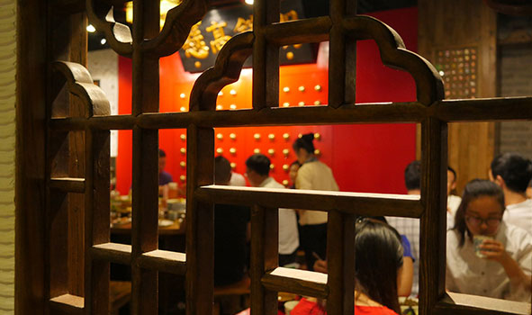
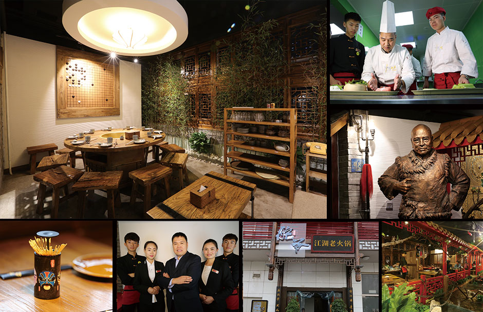
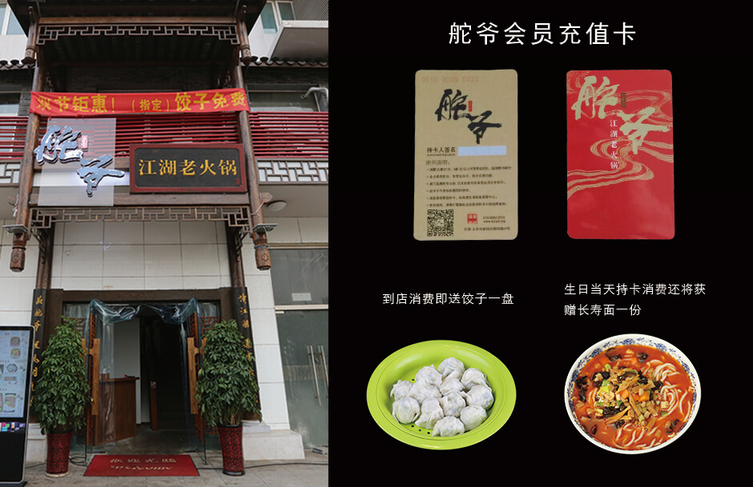

关于舵爷

公司简介
舵爷，火锅的江湖。
舵爷江湖老火锅旗舰店创立于北京财满街。舵爷品牌名来自在“京城孟尝君”之美誉的黄珂黄舵爷，一群骨灰级美食家创造了这一文化老火锅的饕餮盛宴，主打重庆传统火锅情怀。
现代意义上的火锅起源于重庆，位于长江嘉陵江两江交汇处，是近代中国的码头型城市。重庆居住有大量回民，不食牛羊内脏，弃于江边，船工们觉得可惜，便在洗净后放入豆瓣、花椒、辣椒等常用川菜调料，便成了一锅麻辣鲜香的美食而传播四方。清末民初，政府管理无力，受“反清复明”思想的长期影响，四川出现了以诗经“岂曰无衣，与子同袍”的哥佬会帮会组织，又称袍哥会，与洪门、青帮为当时中国最大的三大帮会，鼎胜时几乎四川地区所以成年男子都是袍哥会成员。袍哥会老大被称为舵爷或大爷，舵爷火锅品牌名正是来源于此。 别出心裁的装修，处处体现着舵爷火锅的文化内涵。如果你喜爱朝天门的闹、重庆人的爆、海椒的辣、茂汶花椒的麻、山城啤酒的爽，划挙的帅，那么，来吧！舵爷一生只做这一味。
企业文化
1.企业宗旨
1、以传统重庆老火锅的味道为根本；
2、以食材的生态化、菜品的创意化为向；
3、以超一流的服务精神为基础；
4、以彰显传统文化与现代结合的新中式风格打造就餐环境；
5、以超前的运营战略为核心发展为大型连销餐饮集团。
2.企业使命
舵爷江湖老火锅旗舰店将全情完善各个层面到完美，坚守初心，逐步有效推广加盟企业，以共同价值观和忠义精神打造餐饮业的航母。
3.企业环境
线下活动

活动一
现在只要到店消费，就送饺子一盘。什么？就吃送的一盘饺子就饱了，不点别的了行吗?小编告诉你，这样也可以
活动二
生日当天持卡消费还将获赠镇店菜、长寿面各一份(详情请质询店内服务员)
活动三
店内充值卡满赠活动正在火热进行。充1000赠100，充5000赠750，最高赠到4000！！！还有金牌饺子券和豪礼相送拿着充值卡，享受会员价
注释：具体活动详情请到店咨询，本活动最终解释权归饺耳世家所有。
人才招聘
舵爷火锅餐饮(北京）有限公司因发展经营需要，现面向社会招聘优秀服务人员
1、服务员:招聘20名，男女不限，薪资面议
- 岗位要求：
- 1、年龄：18—35周岁
- 2、身高：女160cm以上，男170cm以上
- 3、有无工作经验不限。（酒店会为您提供一个发展学习的平台）
2、营销经理:招聘10名，限女性，底薪加提成；薪资面议（有客户资源者优先）
- 岗位要求：
- 1、限女性
- 2、有客户资源者优先
- 3、有无工作经验不限。（酒店会为您提供一个发展学习的平台）
福利待遇：包吃包住，每月给员工过生日每月带薪4天休班
联系电话：010-8994 2510 / 010-8994 2012 / 13256192666
酒店地址：北京市朝阳区财满街69号
联系我们
舵爷火锅
北京市朝阳区朝阳路福福满街69号
周经理
010-89942510
jiaoear@126.com